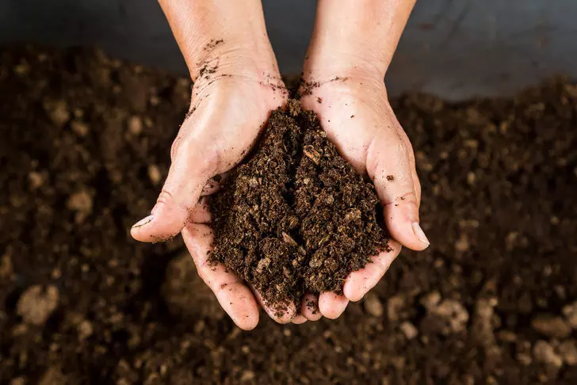

Bitki büyümesi için toprakta bulunan besin maddeleri ve verimliliği etkileyen faktörler.
Toprak Verimliliği:
Toprak verimliliği, bitkilerin büyümesi için gerekli olan besinlerin, suyun ve diğer faktörlerin uygun miktarda bulunduğu bir durumu ifade eder. Verimli bir toprak, bitkilerin sağlıklı büyümesini sağlayabilir. Verimliliği etkileyen faktörler şunlardır:
Besin Maddeleri: Azot, fosfor, potasyum gibi bitkiler için önemli olan minerallerin toprakta yeterli miktarda bulunması gereklidir.
pH Düzeyi: Toprağın asitlik veya alkali seviyesi, bitkilerin besinleri emmesini etkiler. Bitkilerin büyümesi için uygun pH seviyeleri önemlidir.
Organik Madde: Humus içeriği, toprağın verimliliğini artırır ve toprağın su tutma kapasitesini artırır.
Su ve Hava: Toprağın su tutma yeteneği ve hava dolaşımı, bitkilerin büyümesi için gereklidir.
Toprak Besin Değerleri:
Toprak, bitkilerin büyümesi için gerekli olan besinleri sağlar. Bu besinler genellikle şu şekilde sınıflandırılır:
Makrobesinler: Azot (N), fosfor (P), potasyum (K) gibi bitkiler için büyük miktarlarda gereken besin maddeleridir.
Mikrobesinler: Demir (Fe), çinko (Zn), bakır (Cu) gibi bitkiler için daha az miktarda gerekli olan besin maddeleridir.
Bitkiler için uygun besinlerin toprakta bulunması, sağlıklı büyümeleri ve verimli ürün alınmasını sağlar.
Toprak verimliliği ve besin değerleri, tarımın sürdürülebilirliği ve bitki yetiştirme uygulamaları için önemlidir. Bu faktörlerin dengeli bir şekilde sağlanması, sağlıklı ve verimli tarımsal ürünler elde etmek için kritiktir.
Bilgi almak için tıkla.